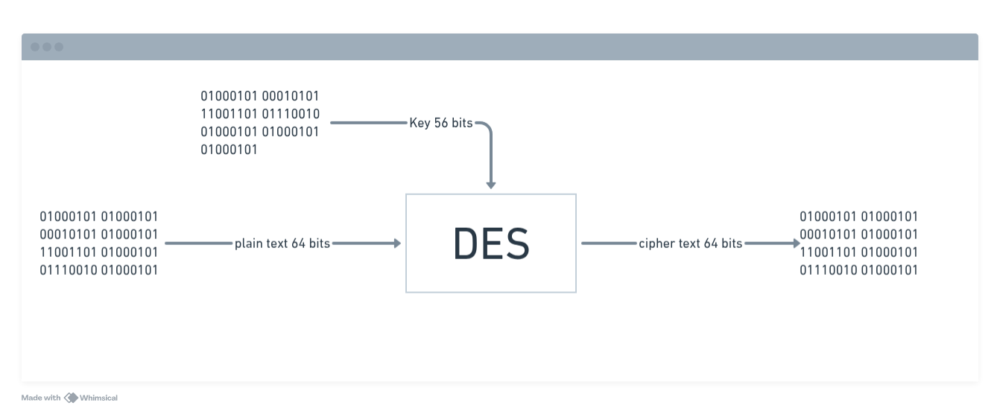
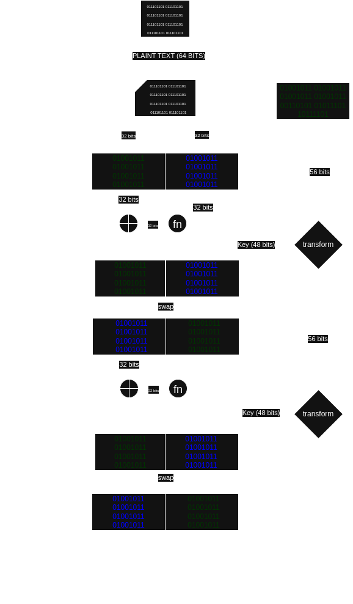

DES: arquitetura, S-boxes e permutações
Data Encryption Standard (DES)
O DES foi concebido no início dos anos 70 e pode ser considerado o primeiro algorítmo de cifra moderno. Ele foi o mais popular algoritmo de cifra simétrica nos anos 80 e 90. Embora o DES seja considerado inseguro em sua forma original, por causa de sua chave pequena, algumas de suas variantes, como o Triple DES (3DES), é ainda usado em muitos sistemas nos dias atuais. Triple DES é uma extensão do DES que usa o DES três vezes em sequência. O design do DES inspirou muitas cifras atuais tornando seu estudo importante para o entendimento de cifras modernas.
Neste capítulo você aprenderá:
- O processo de desenvolvimento do DES, útil para entender a evolução técnica e pollítica da criptografia moderna.
- As idéias de projeto das cifras de bloco, incluindo confusão e difusão, que são propriedades importantes de todas as cifras de bloco modernas.
- A estrutura interna do DES, incluindo a estrutura de Feistel, S-boxes, permutações e o agendamento de chaves (key scheduling).
- Análise de segurança do DES, incluindo ataques de criptoanálise.
- Alternativas ao DES, incluindo 3DES e a cifra de bloco leve PRESENT.
Em 1972, um ato levemente revolucionário foi realizado pelo National Bureau of Standards (NBS) dos Estados Unidos, atualmente chamado de National Institute of Standards and Technology (NIST): o NBS iniciou um processo de chamada pública de propostas para selecionar uma cifra padronizada nos EUA. A ideia era encontrar um único algoritmo criptográfico seguro que pudesse ser utilizado em diversas aplicações. Até então, os governos consideravam a criptografia — e especialmente a criptoanálise — algo tão crucial para a segurança nacional que deveria ser mantido em segredo. No entanto, no início da década de 1970, a demanda por criptografia em aplicações comerciais, como o setor bancário, tornou-se tão urgente que não poderia mais ser ignorada sem consequências econômicas.
O NBS recebeu o candidato mais promissor em 1974, vindo de uma equipe de criptógrafos da IBM. O algoritmo submetido era baseado na cifra Lucifer. Lucifer era uma família de cifras desenvolvida por Horst Feistel no final da década de 1960, sendo uma das primeiras cifras de bloco projetadas para operar sobre dados digitais. Lucifer é uma cifra de Feistel que cifra blocos de 64 bits utilizando uma chave de 128 bits.
Para avaliar a segurança dos algoritmos recebidos, o NBS solicitou ajuda da NSA (National Security Agency), que na época nem sequer admitia sua existência oficialmente. É praticamente certo que a NSA influenciou mudanças na cifra, que foi rebatizada como DES. Uma das alterações foi que o DES foi especificamente projetado para resistir à criptoanálise diferencial, um tipo de ataque que só se tornou conhecido publicamente em 1990. Não está claro se a equipe da IBM desenvolveu esse conhecimento de forma independente ou se foi orientada pela NSA. Supostamente, a NSA também teria convencido a IBM a reduzir o tamanho da chave de Lucifer de 128 bits para 56 bits — o que deixou o algoritmo muito mais vulnerável a ataques de força bruta.
A participação da NSA gerou preocupações, pois havia o receio de que uma backdoor secreta — ou seja, uma propriedade matemática que permitiria quebrar o DES e que só seria conhecida pela NSA — fosse a verdadeira razão por trás das modificações. Outra crítica importante foi a redução do tamanho da chave. Algumas pessoas conjecturaram que a NSA teria capacidade computacional para explorar o espaço de chaves de 2⁵⁶ combinações e assim quebrar o algoritmo por força bruta. Nas décadas seguintes, a maioria dessas preocupações mostrou-se infundada.
Apesar das críticas e controvérsias, em 1977 o NBS publicou todas as especificações da cifra modificada da IBM como o Data Encryption Standard (FIPS PUB 46). Embora a cifra seja descrita no padrão com precisão até o nível de bits, a motivação para diversas decisões de projeto (os chamados critérios de projeto), especialmente a escolha das caixas de substituição (S-boxes), nunca foi oficialmente divulgada.
Com o crescimento rápido dos computadores pessoais no início da década de 1980 — e com todas as especificações do DES sendo públicas — tornou-se mais fácil analisar sua estrutura interna. Nesse período, a comunidade acadêmica de pesquisa em criptografia também cresceu, e o DES passou a ser alvo de intensa análise. No entanto, até 1990, nenhuma vulnerabilidade grave foi encontrada. Inicialmente, o DES foi padronizado por 10 anos, até 1987. Devido ao uso generalizado e à ausência de falhas críticas, o NIST reafirmou seu uso federal até 1999, quando foi finalmente substituído pelo Advanced Encryption Standard (AES).
3.1.1 Confusion and Diffusion
Antes de analisarmos os detalhes do DES, é útil entender as operações básicas que podem ser aplicadas para alcançar uma criptografia forte. Segundo o famoso teórico da informação Claude Shannon, existem duas operações primitivas com as quais se pode construir algoritmos criptográficos robustos [232]:
Confusão é uma operação criptográfica em que a relação entre a chave e o texto cifrado é obscurecida. Atualmente, um elemento comum para alcançar confusão é a substituição, presente tanto no DES quanto no AES.
Difusão é uma operação criptográfica em que a influência de um símbolo do texto original é espalhada por muitos símbolos do texto cifrado, com o objetivo de ocultar propriedades estatísticas do texto original. Um exemplo simples de elemento de difusão é a permutação de bits, usada com frequência no DES. O AES utiliza a operação mais avançada chamada MixColumn.
Cifras que aplicam apenas confusão — como a cifra de César ou a máquina Enigma usada na Segunda Guerra Mundial — não são seguras. O mesmo vale para cifras que aplicam apenas difusão. No entanto, ao combinar essas operações em sequência, é possível construir cifras robustas. A ideia de concatenar várias operações criptográficas também foi proposta por Shannon. Tais cifras são conhecidas como cifras de produto (product ciphers). Todas as cifras de bloco modernas pertencem a essa categoria, pois consistem em rodadas repetidas aplicadas aos dados (ver Figura 3.1). As cifras de bloco modernas possuem excelentes propriedades de difusão. Isso significa que, ao nível do algoritmo, uma alteração de um único bit no texto original (plaintext) tende a modificar, em média, metade dos bits de saída — fazendo com que o texto cifrado resultante pareça estatisticamente independente do original. Essa é uma propriedade fundamental a se ter em mente ao lidar com cifras de bloco. Podemos demonstrar esse comportamento com o exemplo a seguir:
Exemplo 3.1 Considere uma cifra de bloco simplificada com comprimento de bloco de 8 bits. A criptografia de dois textos originais x₁ e x₂, que diferem em apenas um bit, deve resultar aproximadamente na situação mostrada na Figura 3.2.
Observe que cifras de bloco modernas operam com blocos de 64 ou 128 bits, mas exibem exatamente o mesmo comportamento se um único bit de entrada for alterado.
3.2 Visão geral do algoritmo DES O DES é uma cifra que criptografa blocos de 64 bits utilizando uma chave de 56 bits (ver Figura 3.3).
O DES é uma cifra simétrica, ou seja, a mesma chave é usada tanto para cifrar quanto para decifrar. Assim como praticamente todas as cifras de bloco modernas, o DES é um algoritmo baseado em rodadas. Para cada bloco de texto original, o processo de criptografia envolve 16 rodadas, todas com a mesma estrutura. A Figura 3.4 mostra essa estrutura. Em cada rodada é usada uma subchave diferente kᵢ, derivada da chave principal k.
Vamos agora examinar com mais detalhes a estrutura interna do DES, conforme ilustrado na Figura 3.5. A estrutura apresentada é chamada de rede de Feistel (Feistel network), que pode formar cifras muito fortes se bem projetada. Redes de Feistel são utilizadas em outras cifras modernas (embora não em todas; por exemplo, o AES não é uma cifra de Feistel).
💡 Vantagem prática: Um dos benefícios das redes de Feistel é que os processos de cifragem e decifragem são praticamente idênticos. A única diferença é a ordem das subchaves. Isso facilita a implementação em software e hardware.
Após a permutação inicial de bits (IP) sobre o bloco de 64 bits de entrada x, o texto é dividido em duas metades: L₀ e R₀. Essas duas metades de 32 bits são a entrada para a rede de Feistel, que consiste em 16 rodadas. A metade direita Rᵢ é passada como entrada para a função f. O resultado da f é então XOR com a metade esquerda Lᵢ. Por fim, as metades são trocadas. Esse processo se repete nas rodadas seguintes, e pode ser descrito por:
Lᵢ = Rᵢ₋₁
Rᵢ = Lᵢ₋₁ ⊕ f(Rᵢ₋₁, kᵢ)
para i = 1, ..., 16.
Após a rodada 16, as metades L₁₆ e R₁₆ são trocadas novamente, e a permutação final (IP⁻¹) é aplicada — sendo o inverso da permutação inicial IP.
Em cada rodada, a subchave kᵢ é gerada a partir da chave principal de 56 bits, por meio de um processo chamado de agendamento de chaves (key schedule).
É importante observar que a estrutura de Feistel criptografa, em cada rodada, apenas metade do bloco de entrada. A metade direita Rᵢ₋₁ passa pela função f, enquanto a metade esquerda é atualizada via XOR com a saída dessa função. A metade direita é apenas copiada para a próxima rodada.
🎯 Interpretação útil: A função f pode ser vista como um gerador pseudoaleatório que recebe como entrada Rᵢ₋₁ e kᵢ. Sua saída serve para “embaralhar” Lᵢ₋₁ via XOR. Se a saída de f for imprevisível, o resultado é uma cifra forte.
Do ponto de vista matemático, a estrutura de Feistel mapeia bijetivamente os 64 bits de entrada para os 64 bits de saída — ou seja, cada entrada tem uma única saída correspondente, e vice-versa. Isso permanece verdadeiro mesmo que a função f interna não seja bijetiva. No caso do DES, a f é uma função não injetora, que mapeia 32 bits de entrada para 32 bits de saída, usando uma subchave de 48 bits.
texto longo explicando
vs
// Entrada: bloco de 64 bits
block := [...]byte{...}
// Permutação inicial
permuted := IP(block)
// Divisão em L₀ e R₀
L[0] = permuted[:4] // primeiros 32 bits
R[0] = permuted[4:] // últimos 32 bits
// 16 rodadas de Feistel
for i := 1; i <= 16; i++ {
L[i] = R[i-1]
R[i] = L[i-1] ^ f(R[i-1], k[i])
}
// Swap final
preOutput := R[16] || L[16]
// Permutação final
ciphertext := IPInv(preOutput)
vs
Bloco de 64 bits
↓
Permutação inicial (IP)
↓
Divisão em L₀ e R₀
↓
Para i = 1 até 16:
Lᵢ = Rᵢ₋₁
Rᵢ = Lᵢ₋₁ ⊕ f(Rᵢ₋₁, kᵢ)
↓
Swap final (R₁₆, L₁₆)
↓
Permutação final (IP⁻¹)
↓
Bloco cifrado
vs

